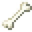

堆肥桶
堆肥桶
堆肥桶是生產肥料的重要工具。堆肥桶能將【綠色物品】和【棕色物品】轉化成堆肥。不同物品對堆肥的貢獻不同。手持物品Right Click就能將其加入堆肥桶。後文將講解具體需要哪些物品。


製作堆肥桶只需要一些木料和泥土！
Working Conditions
Composters operate better in certain conditions. Composters in regions of less than 150mm or greater than 350mm of rainfall operate much slower, with that effect getting stronger closer to the maximum and minimum rainfall. Also, composters that are touching other composters work slower.
Multiblock
堆肥桶的不同狀態 - 空、工作中、完成。
The composter takes 10天 to complete in average conditions. When it is ready, it will have a dirt-like color and gray particles will be emitted from the top of it. The compost can then be retrieved with Right Click and Shift with an empty hand. Adding things like meat and bones to compost spoils it, turning it reddish and causing it to emit gross particles. The rotten compost can be removed in the same way as good compost. When used on a crop, it instantly kills it.
腐爛的堆肥
Multiblock
腐爛的堆肥桶
Compost Greens
Item: #tfc:compost_greens/low
有些綠色物品對堆肥進度貢獻較小，例如草和類似的植物。要滿足堆肥桶對綠色物品的需求，你需要 16 個這類物品。
Compost Greens
有些綠色物品對堆肥桶貢獻中等，例如穀物。要滿足堆肥桶對綠色物品的需求，你需要 8 個這類物品。
Compost Greens
有些綠色物品對堆肥桶貢獻很大，例如水果和蔬菜。要滿足堆肥桶對綠色物品的需求，你需要 4 個這類物品。
Compost Browns
Item: #tfc:compost_browns/low
有些棕色物品對堆肥桶貢獻較小，例如干蘆葦、蕨類、藤蔓、以及落葉。要滿足堆肥桶對棕色物品的需求，你需要 16 個這類物品。
Compost Browns
有些棕色物品對堆肥桶貢獻中等，例如草木灰和黃麻。要滿足堆肥桶對棕色物品的需求，你需要 8 個這類物品。
Compost Browns
有些棕色物品對堆肥桶貢獻很大，例如西瓜、南瓜、枯萎的灌木、松果、以及浮木。要滿足堆肥桶對棕色物品的需求，你需要 4 個這類物品。

Compost Poisons
有些物品會污染你的堆肥桶。比如肉和骨頭。用腐爛的堆肥施肥會立刻使農作物死亡。